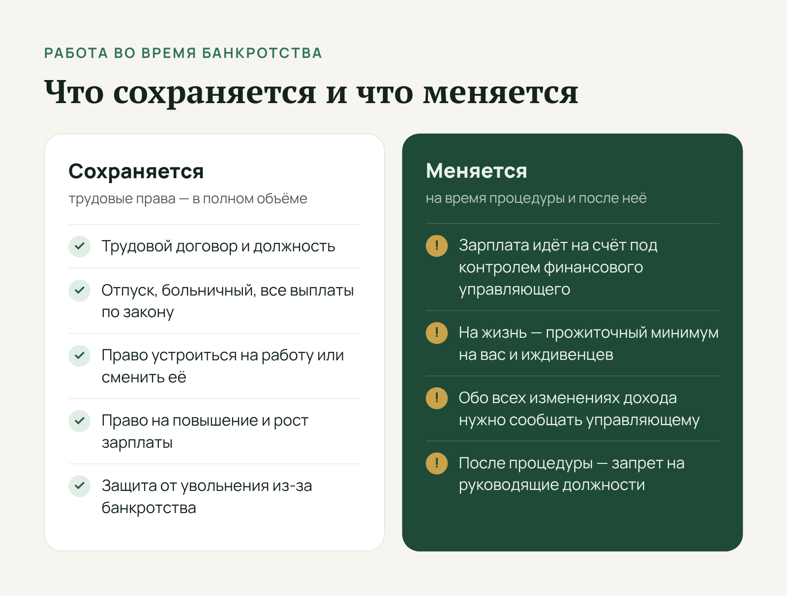
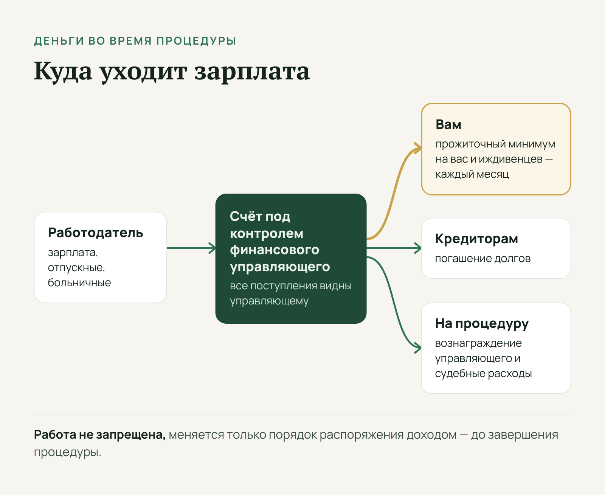
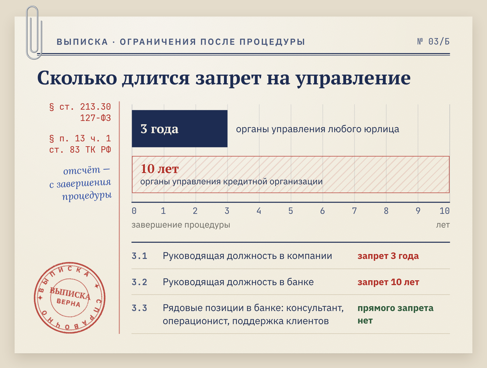
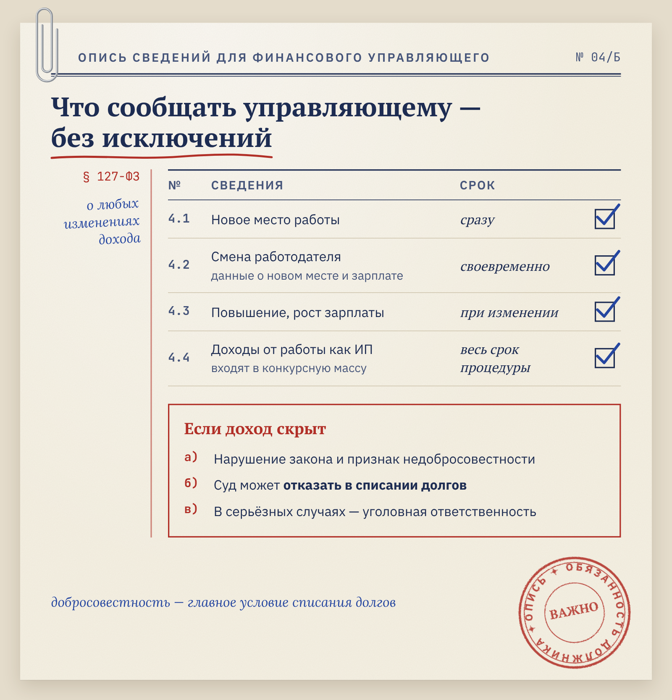

Юридическая компания (банкротство физлиц) · Право и финансы · статья для юристов
Статья для юристов по банкротству о том, можно ли работать во время процедуры
Юридическая компания (банкротство физлиц)
Три заказчика из сфер, где ошибка в тексте бьёт по здоровью и деньгам читателя: флебологическая клиника, диагностический медцентр «ТомоГрад» в Ярославской области и юридическая компания, которая ведёт банкротство физических лиц.
- Площадка
- Сайт юридической компании
- Формат
- Информационная статья с таблицей и FAQ
- Год
- 2025
Юридической компании требовался текст для людей, которые начинают процедуру банкротства и боятся потерять работу. Подготовила статью с опорой на закон о банкротстве и Трудовой кодекс.
Задача
Ответить на вопрос, можно ли работать во время процедуры банкротства.
Решение
Опиралась на нормы закона о банкротстве и Трудового кодекса, свела ограничения в таблицу.
Результат
Статья в топ-10 Яндекса по запросу «можно ли работать при банкротстве». Заказчик продолжил сотрудничество серией статей.
Можно ли официально работать при банкротстве
Многие люди в сложной финансовой ситуации откладывают банкротство из-за одного страха: процедура лишит их работы и дохода. На деле всё наоборот — закон не мешает трудиться, а стабильная зарплата во многих случаях помогает пройти процедуру спокойнее.
Разберёмся, как сочетаются банкротство при официальной работе, можно ли устроиться на новое место или сменить его, что происходит с зарплатой и какие ограничения действительно существуют.
Что говорит закон
Закон о банкротстве (127-ФЗ) не содержит запретов для работающих граждан, которые хотят списать долги. Официальный доход не мешает подать заявление, а при реструктуризации долгов становится основой плана платежей. Процедура задумана как способ восстановить платёжеспособность человека, а не загнать его в ещё большую финансовую яму.

Многое решает размер дохода. Суд сопоставляет регулярные поступления от работодателя с общей суммой обязательств. Если зарплаты явно не хватает, чтобы погасить долги в обозримом будущем, это весомое основание для введения процедуры.
Суд или МФЦ
Важно отличать право на банкротство от права на его упрощённую форму. Внесудебное банкротство через МФЦ доступно только при строгих условиях — в частности, если приставы окончили исполнительное производство из-за того, что взыскать с должника нечего.
Когда у человека есть официальная зарплата, приставы обычно обращают взыскание на неё. Поэтому работающему гражданину с «белым» доходом чаще всего подходит судебная процедура.
Как проходит процедура, если вы работаете
Если вы работаете, порядок действий почти такой же, как у всех. Основные этапы:
- Подготовка документов. Справки о доходах, трудовой договор, кредитные договоры, выписки по счетам.
- Подача заявления в арбитражный суд с обоснованием неплатёжеспособности.
- Оплата госпошлины и вознаграждения финансовому управляющему.
- Участие в судебных заседаниях, где решается вопрос о реструктуризации долгов или реализации имущества.
- Взаимодействие с финансовым управляющим на протяжении всей процедуры.
Главное изменение касается денег. После введения процедуры зарплата поступает на счёт, которым распоряжается финансовый управляющий: так он следит за движением денег и защищает интересы кредиторов.

Без средств к жизни человек не остаётся: ежемесячно ему выделяют сумму в размере прожиточного минимума на него самого и иждивенцев. Остальное идёт на погашение долгов, вознаграждение управляющего и судебные расходы.
Можно ли устроиться на работу или сменить её
Один из самых частых вопросов — можно ли устроиться на работу при банкротстве, если на момент подачи заявления человек был безработным. Да, можно. О новом месте работы нужно сразу сообщить финансовому управляющему: новый доход войдёт в конкурсную массу.
Так же решается вопрос, можно ли менять работу при банкротстве. Закон этого не запрещает, а более высокая зарплата может даже ускорить расчёты по плану реструктуризации. Условие одно — сообщать управляющему о любых изменениях дохода. Основные ситуации собраны в таблице:
| Ситуация | Можно ли | Что сделать |
|---|---|---|
| Устроиться на работу впервые за время процедуры | Да | Сразу сообщить финансовому управляющему |
| Сменить работу | Да | Передать управляющему данные о новом работодателе и зарплате |
| Получить повышение | Да | Сообщить об изменении дохода |
| Уйти в отпуск или на больничный | Да | Ничего — отпускные и больничные тоже поступают на счёт под контролем управляющего |
| Занять руководящую должность | Ограничено | Учесть запреты, которые действуют после завершения процедуры (см. ниже) |
Как видно, почти всё упирается в прозрачность: работать и зарабатывать можно, скрывать доход — нельзя. Об ограничениях для руководителей — в отдельном разделе.
Могут ли уволить или не взять на работу
Один из самых распространённых страхов должника — потерять работу из-за своего статуса. Увольнение исключительно по причине банкротства незаконно. Работодатель не вправе расторгнуть трудовой договор, понизить сотрудника в должности или применить к нему санкции из-за финансовой несостоятельности. Трудовой договор продолжает действовать в полном объёме: отпуск, больничный и все предусмотренные законом выплаты сохраняются.
Если увольнение всё же произошло, восстановиться на работе можно через суд. Иск подают в районный суд в течение месяца со дня получения копии приказа об увольнении (ст. 392 ТК РФ). Суд может обязать работодателя восстановить сотрудника и выплатить компенсацию за вынужденный прогул и моральный вред.
Отказ в приёме на работу из-за банкротства тоже неправомерен. Работодатели редко называют настоящую причину, но если удастся доказать, что отказ связан именно со статусом банкрота, его можно оспорить в суде.
На практике многие компании относятся к процедуре спокойно, особенно если должность не связана с деньгами. Осторожнее работодатели ведут себя при найме на позиции с материальной ответственностью.
Ограничения для руководителей и финансового сектора
Для рядового сотрудника правовые последствия банкротства минимальны. Иначе обстоит дело с руководящими постами: после завершения процедуры статья 213.30 Закона о банкротстве на несколько лет закрывает доступ к управлению компаниями.

В течение трёх лет гражданин не может занимать должности в органах управления юридического лица и иным образом участвовать в управлении. Для кредитных организаций срок больше — десять лет. Если руководитель проходит процедуру, работодателю придётся перевести его на должность без управленческих функций или расторгнуть договор по пункту 13 части 1 статьи 83 ТК РФ.
При этом работать в банке на рядовых позициях не запрещено: консультантом, операционистом, специалистом поддержки клиентов. Работодатель может отказать по иным формальным причинам, но прямого запрета на такие должности нет.
Что будет, если скрыть доход
Работать во время процедуры можно и нужно, но с одним жёстким правилом: финансовый управляющий должен знать обо всех изменениях в трудовом статусе. Это касается и нового места работы, и смены работодателя, и роста зарплаты.

Сокрытие дохода — нарушение закона и признак недобросовестного поведения. В этом случае суд может отказать в списании долгов, а в серьёзных случаях должнику грозит и уголовная ответственность. Спишут ли долги в конце процедуры, прежде всего зависит от добросовестности должника.
Вопросы и ответы
Ниже — ответы на вопросы, которые работающие должники задают чаще всего.
Можно ли работать как индивидуальный предприниматель?
Да, но с оговорками. Доходы от предпринимательской деятельности попадают в конкурсную массу, и их контролирует финансовый управляющий. Если суд признаёт ИП банкротом и вводит реализацию имущества, его регистрация в качестве предпринимателя утрачивает силу, а зарегистрироваться снова можно только через пять лет.
Может ли финансовый управляющий потребовать уволиться?
Нет. Управляющий не вправе вмешиваться в трудовые отношения должника и требовать увольнения. Его задача — контролировать доходы и распределять их в интересах кредиторов, не более того.
Может ли управляющий запретить работать в конкретной компании?
Нет, таких полномочий у него нет. Но он контролирует поступления, поэтому о любом новом месте работы и размере зарплаты ему нужно сообщить.
Влияет ли смена работы на утверждённый план реструктуризации?
Может повлиять. Существенное изменение дохода — повод пересмотреть план: если новая зарплата позволяет платить больше, управляющий или кредиторы могут предложить изменить график платежей.
Сохраняется ли право на отпуск и больничные?
Да, все трудовые и социальные права сохраняются полностью. Отпускные и выплаты по больничному также поступают на счёт под контролем управляющего и учитываются при расчёте ежемесячной суммы на жизнь.
Вывод
Банкротство физического лица не мешает официально работать, менять работу или устраиваться на новую. Закон защищает человека от увольнения и дискриминации, а стабильный доход нередко становится основой для реструктуризации долгов.
Реальные последствия для работающего должника — временный контроль над зарплатой и запрет на руководящие должности после завершения дела. Остальное в ваших руках: вовремя сообщайте управляющему об изменениях и не скрывайте ничего от суда и кредиторов — тогда процедура закончится списанием долгов и можно будет начать с чистого листа.
Материал носит информационный характер. Решение о банкротстве лучше принимать после консультации с юристом, который оценит вашу ситуацию.